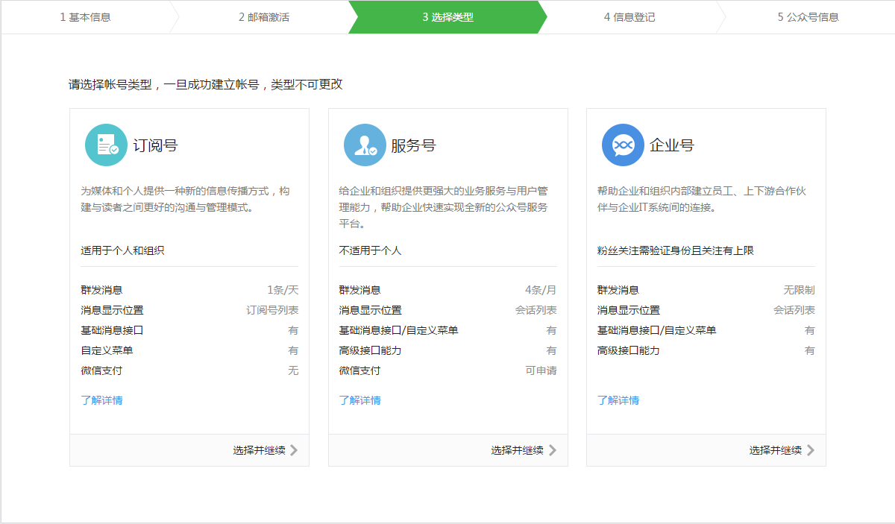

作为一名Developer
你现在还有竞争力吗？
移动应用开发
接入微信开放平台，让你的移动应用支持微信分享、微信收藏和微信支付。
网站应用开发
接入微信开放平台，让你的网站支持使用微信帐号来登录。
公众帐号开发
接入微信开放平台公众帐号开发，为亿万微信用户提供轻便的服务。
公众号第三方平台开发
成为公众号第三方平台，为广大公众号提供运营服务和行业解决方案。
公众号与普通微信号的区别
| 公众号 | 普通微信号 | |
|---|---|---|
| 社交范围 | 朋友，熟人 | 公众订阅 |
| 用途 | 聊天，分享 | 商业推广 |
| 所有者 | 移动客户端 | PC端 |
| 交互方式 | 相互关注 | 推送，被动响应 |
创建公众号：
